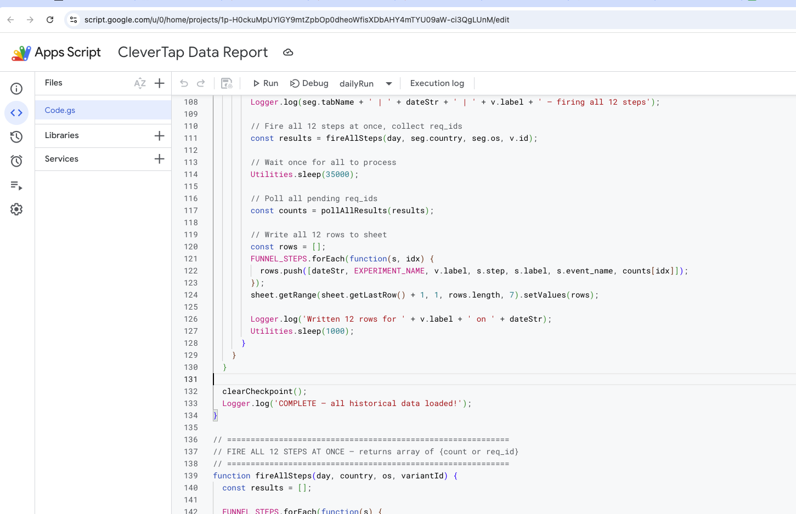
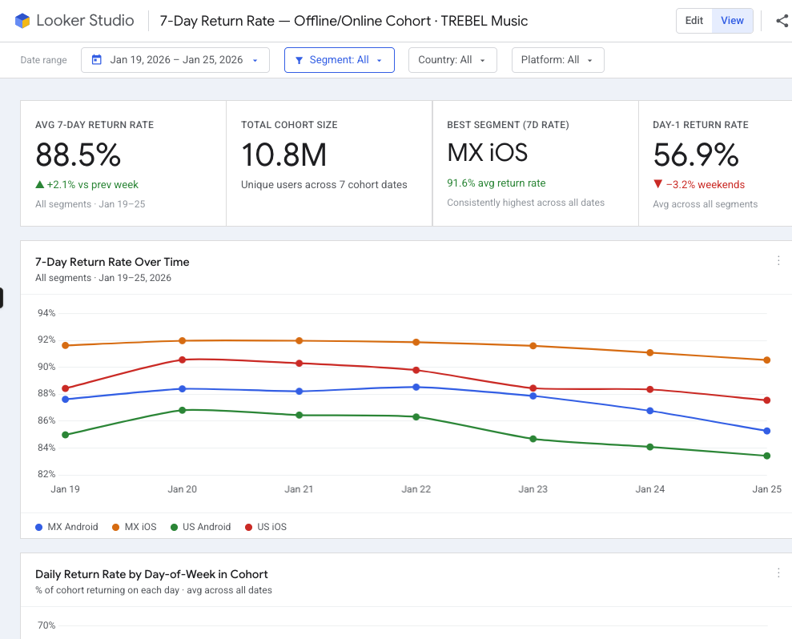

CleverTap funnel data pulled into Google Sheets via Apps Script.
Scheduled, filtered and ready by 8am.
LIVE·shipped: Apr 2026·platform: Google Sheets
01
LEVEL 1 START
Data extraction for reporting, visualization, and decision-making is one of the
most underrated time sinks in product work. When the data lives in an external
platform, there is usually a visualization solution built into it. But getting to
that visualization requires someone to build the right query, configure the right
view, and maintain it when requirements change.
Regarding data, most of my work is in the context of A/B testing. Key data
for that lives in CleverTap, an engagement and analytics platform
that tracks user behavior across experiments, funnels, and events. It has a solid
dashboard. But that dashboard requires someone to configure the right views.
▸ THE SCENARIO
A/B testing compounds this pain fast. Four active experiments running at once,
each with up to five variants, across two countries and two operating systems.
To analyze results properly, every combination needs to be queried, updated
daily, stacked by date. That is not something a dashboard handles. It is
something that turns into a late night without warning.
▸ THE UNLOCK
CleverTap has an API. Every major analytics platform does. And Google Apps
Script is a scripting environment built directly into Google Sheets that
can call any API you have credentials for. No server, no deploy, no ticket.
Write a script, set a trigger, get fresh data in a spreadsheet on a schedule.
ANY API, ANY SOURCE
If a platform has an API and you have credentials, Apps Script can reach it. CleverTap, Google Ad Manager, Firebase, Amplitude: same pattern each time.
SCHEDULED + AUTOMATIC
Set a trigger and the data refreshes on its own. No manual exports. No stale numbers from three days ago in a deck presented today.
MANIPULATE IT ANYWHERE
Once the data is in Sheets, everything opens up. Formulas, pivot tables, Looker Studio, sharing with people who don't have platform access.
AI WRITES THE GLUE
Auth headers, pagination, retry logic, polling: all boilerplate. AI handles the typing. You handle the data model and the questions worth asking.
"The dashboard shows you what the platform wanted you to see. The API lets you ask what you actually need to know, then take it wherever you want."
Working through this project, the pattern became clear: the whole process was
repeatable. Identifying an API, structuring the query, defining the output schema,
wiring up a trigger. The same steps regardless of the platform. That realization
turned one script into a method, and the method into a prompt that could produce
a working script for any data source, fast.
02
BOSS FIGHT
The goal was straightforward: pull daily event counts for a 12-step funnel,
broken down by experiment variant, country, and operating system, within a
defined time frame, updated daily. CleverTap had all of it. The task was
writing a script that would actually hold up as a daily pipeline.
It did not go in a straight line. Each wall hit revealed something specific
about how the API actually worked versus what the dashboard suggested. This
is that story.
▸ THE ASYNC WALL
The first call to CleverTap's Counts API came back with a partial
status and a job ID instead of data. The platform queues analytics queries
server-side and processes them asynchronously. You take the req_id,
poll a separate GET endpoint every 30 seconds, and wait for success.
That two-step cycle is the heartbeat of every interaction with this API.
POST /counts/events.json → { "req_id": "164266", "status": "partial" } → GET ?req_id=164266 → { "count": 46097, "status": "success" }
⚠ GOTCHA · POLLING TOO FAST
Hitting the poll endpoint before the query finishes just returns another partial. The API needs time to process. The 30-second wait is not a workaround: it is the correct usage pattern.
▸ THE WRONG SCOPE
The first script Claude produced pulled raw event records, one row per event
occurrence, paginated across thousands of results. That was not what was needed.
The actual requirement was simpler: total count per event per day. One number.
Not every individual event. Fixing the scope meant switching from the export
API to the Counts API entirely, which also eliminated the pagination problem
that was crashing the script anyway.
⚠ GOTCHA · UNDER-SPECIFIED PROMPT
The first version of the prompt asked for "the data." That is too vague. "One count per event per day per dimension combination" is the correct spec. The AI generates exactly what you ask for. If the output is wrong, the spec is wrong.
✓ WIN · COUNTS OVER RECORDS
One number per day per dimension is all Looker Studio needs to build a funnel. Switching to the Counts API simplified the architecture and fixed two problems at once.
▸ THE FIELD NAME WALL
Filtering by OS looked simple. The CleverTap dashboard shows "OS = Android" as
a user property filter. The API does not accept that syntax. The field lives
under a key called technographics inside common_profile_properties.
Country filtering is different still: it uses geo_fields, formatted
as nested arrays with full country names, not codes.
The dashboard showed Country = US. The API required geo_fields: [["United States"]]. Every platform has this gap. Reading the documentation is not optional. Guessing from UI labels produces code that compiles and returns nothing.
▸ THE EXPERIMENT BRIDGE
The hardest conceptual piece: CleverTap does not tag funnel events with which
experiment a user belongs to. The bridge is a separate event called
ab_test_audience that fires when a user is enrolled in an experiment.
To count funnel events per variant, you filter to users who also fired that
enrollment event with the correct variant ID, expressed as
a nested query inside the main payload.
Tested on a single day: Baseline returned 1, Variant A returned 4. Different numbers, both non-zero. The segmentation was real and working.
▸ APPS SCRIPT IN ACTION

EXECUTION LOG
the script logging live: segment, day, variant, step count. Pages through the API and writes each batch to the sheet.
▸ THE SPEED WALL
The first working version ran all queries sequentially: fire one call, wait 30
seconds for the poll, write the result, fire the next. With over 2,600 total
queries across all experiments, variants, funnel steps, and days, that approach
translated to roughly 22 hours of pure wait time.
✓ AFTER
Fire all 12 steps at once → wait 30s once → poll all 12 → write all 12
12 steps + 1 wait = ~40 seconds per variant
✓ WIN · 10X FASTER
Batching all 12 funnel steps per variant, waiting once, and polling all results together made the script roughly 10 times faster. The historical load finished across a few overnight runs instead of days.
▸ LOOKER STUDIO VISUALIZATION

FUNNEL BY VARIANT
the data in Looker Studio: funnel steps on one axis, count on the other, broken down by variant. Drop-off visible at a glance across Baseline, A, B, C, D.
▸ THE MASTER PROMPT
Somewhere in the middle of all of this, the pattern became visible. Every wall
came down to the same set of questions: how does this API handle async responses,
what are the actual field names for each filter dimension, how should the output
be structured so it works in Looker Studio without rework, and how does the
script stay alive across execution limits. Answer those four questions upfront
and the script writes itself.
That became a prompt. Not a general "help me write an Apps Script" prompt. A
structured discovery process specific to pulling CleverTap A/B test data that
front-loads the spec before generating any code. Think of it like a waiter taking
an order: they don't hand you the kitchen's full ingredient list. They ask the
right questions in the right order to get you what you actually want.
◈ PROMPT SPEC · CLEVERTAP A/B TEST PIPELINE
INPUT · WHAT YOU BRING
CleverTap credentials and region
Experiment name and variant identifiers
Funnel events to measure, in order
Segmentation dimensions: country, OS
Date range and refresh cadence needed
OUTPUT · WHAT YOU GET
Working script with auth and retry built in
Correct CQL field names for each filter
Long-format schema ready for Looker Studio
Checkpoint system for large historical loads
Daily trigger configuration included
HOW IT WORKS
The prompt opens with discovery questions before any code is written. It establishes whether the API response is synchronous or async, what the variant identifiers look like in the actual data, how the experiment filter connects to the funnel events via ab_test_audience, and what the output schema needs to be for Looker Studio. These are the variables that change between experiments, and the questions that produce zeros when skipped.
The second phase locks the data structure: long format, one row per dimension combination, with dimensions as columns and count as the metric. Once those decisions are made explicitly, the code is just execution of a spec that already exists.
03
INVENTORY
▸ EQUIPMENT
scripting envGoogle Apps Scriptruns inside Sheets, no server or deploy neededFree
outputGoogle Sheetslong format, one tab per segmentFree
visualizationLooker Studioconnected to Sheets, funnel charts by variantFree
data sourceCleverTapCounts API · CQL payload · async req_idPaid
aiClaude (Sonnet)script generation, debugging, API researchPaid
▸ PIPELINE ARCHITECTURE
data source execution layer output / trigger visualization
▸ STEP-BY-STEP WALKTHROUGH
From zero to a working daily pipeline on any analytics platform.
1
CREATE A GOOGLE SHEET
One sheet per project. The script creates segment tabs automatically on the first run if they don't already exist.
2
OPEN APPS SCRIPT
Extensions menu inside Google Sheets, then Apps Script. A code editor opens in the browser. No install required. Paste the script and save.
3
PROMPT CLAUDE WITH THE MASTER PROMPT
Input the platform, the experiment details, the funnel events, and the segmentation dimensions. The output is a working script with auth, polling, batching, and checkpoint resume already built in.
4
TEST ONE CALL FIRST
Add API credentials, run a single call for one day and one segment. Confirm the number matches what the source platform shows. Only then generalize to the full range.
5
SET THE DAILY TRIGGER
Most analytics platforms update their previous day's data during early morning hours. Schedule the trigger to run after that window. The script runs on Google's servers, not your browser, so closing your laptop doesn't stop it.
6
CONNECT TO LOOKER STUDIO
Add the sheet as a data source in Looker Studio. The long-format schema lets you filter by any dimension combination without reconfiguring anything. Build the funnel chart once and it updates itself every day.
04
XP GAINED
▸ AI POWER-UPS
building with ai
READ THE DOCS BEFORE GENERATING CODE
AI writes confident code against APIs it partially knows. The CleverTap field names (technographics, geo_fields, advanced_query) are not guessable from general knowledge. They require reading the actual documentation. When that step was skipped, the output was plausible-looking code that returned zero results. The fix: prompt Claude to fetch and read the docs first, then write the code against what they actually say.
TEST ONE CALL BEFORE LOOPING
Every working script in this chapter started as a single hardcoded test: one day, one variant, one event. Confirm the API responds correctly, confirm the filter works, confirm the number matches the source dashboard, then generalize into a loop. Looping first hides which variable is broken and turns a short debug into a long guessing session.
THE SPEC IS THE ENGINEERING WORK
The iterations where Claude produced working code on the first try were the ones with a fully defined spec: exact field names confirmed, exact date range set, exact output schema decided. Vague inputs produce vague code. The prompt work and the spec work are the real work. The code is just execution of decisions that were already made.
▸ PRODUCT SPECIAL MOVES
product thinking
DESIGN THE SCHEMA BEFORE THE SCRIPT
The most important decision in this project was choosing the output format before writing a single line of code. Long format means one row per unique combination of date, segment, variant, and funnel step. Every dimension is its own column. The count is the metric. This makes the data Looker Studio-ready, filter-friendly, and easy to extend without restructuring when a new experiment starts. Wide format (one column per day) breaks every time the date range changes. Schema first, code second.
THE PATTERN COMPOUNDS
The meta-unlock is not CleverTap or Apps Script. It is the pattern itself. Any API with credentials, any data source, any question. A PM who builds this once can build it for any other analytics platform they work with. The skill transfers. The queue dependency on engineering does not come back.
▸ DEV SECRETS DISCOVERED
development learnings
ASYNC APIS NEED POLLING, NOT WAITING
Many analytics APIs queue requests and return a job ID rather than data immediately. The correct pattern: fire requests in a batch, wait once, poll all results together, write all results. Sequential fire-wait-fire-wait is the intuitive approach and the slow one. In this project, batching was 12 times faster. The same principle applies to any async API regardless of the platform.
SCRIPTING ENVIRONMENTS HAVE HARD EXECUTION LIMITS
Execution environments impose hard time ceilings per run. Any script handling a large date range will hit one. The solution is checkpointing: save progress after every unit of work, read it on the next run, resume exactly where you left off. Specifically in Apps Script, manually running a script from the browser stops when you close the tab. Only trigger-based executions run server-side and survive disconnects.
DASHBOARD LABELS AND API FIELDS ARE DIFFERENT
Every platform has a gap between what the UI shows and what the API accepts. In this case the dashboard displayed Country = US and the API required geo_fields: [["United States"]]. The only reliable way to find real field names is to read the API documentation. Guessing from UI labels produces code that compiles fine and returns nothing.
ZEROS ARE DATA TOO
When certain segments returned zero counts across all variants, the first instinct was a script bug. The actual cause was upstream: those users were not enrolled in the experiment at all, an issue with how the app tagged audience events. The script was correct. The input data was wrong. Knowing what a working result looks like is how you tell the difference between a pipeline failure and a data quality problem.
▸ SIDE QUESTS
future iterations
ADAPT THE PROMPT FOR OTHER PLATFORMS
The master prompt was built against CleverTap because that was the urgent case. The next test is applying the same pattern to another platform used daily: Google Ad Manager, Firebase, or any internal analytics endpoint. If the prompt holds without new discoveries specific to that platform, the method is genuinely portable across tools.
AUTOMATE DOWNSTREAM WORKFLOWS
Right now the script pulls data and writes it. The next layer is action: send a Slack alert when a variant shows a count drop greater than 30% day-over-day. Flag anomalies before they surface in a weekly review. The data is already in Sheets. Adding a comparison formula and a webhook call turns a reporting tool into an early warning system without rebuilding anything.